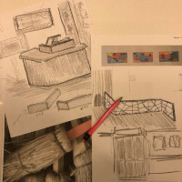

Història
Una esparteria centenària de Reus
En paraules de Conrad Gallisà
 L'Esparteria Gallisà es va obrir el 1910. Inicialment eren el meu avi i el seu germà i als anys 20 s'ho va quedar el meu avi i el seu germà va obrir un magatzem d'adobs al carrer Sant Llorenç. Durant la gerra Civil hi va caure una bomba que la va enrrunar que va portar al meu avi a tornar-la a construir des dels fonaments.
L'Esparteria Gallisà es va obrir el 1910. Inicialment eren el meu avi i el seu germà i als anys 20 s'ho va quedar el meu avi i el seu germà va obrir un magatzem d'adobs al carrer Sant Llorenç. Durant la gerra Civil hi va caure una bomba que la va enrrunar que va portar al meu avi a tornar-la a construir des dels fonaments.
Va portar la botiga fins al 1960 que va morir i es llavors que s'en fa càrrec el meu pare fins a la seva jubilació.
El treball de Jobacasén
Joan Baptista Cabré Sendrós (Riudoms 1952) és l'artista que .